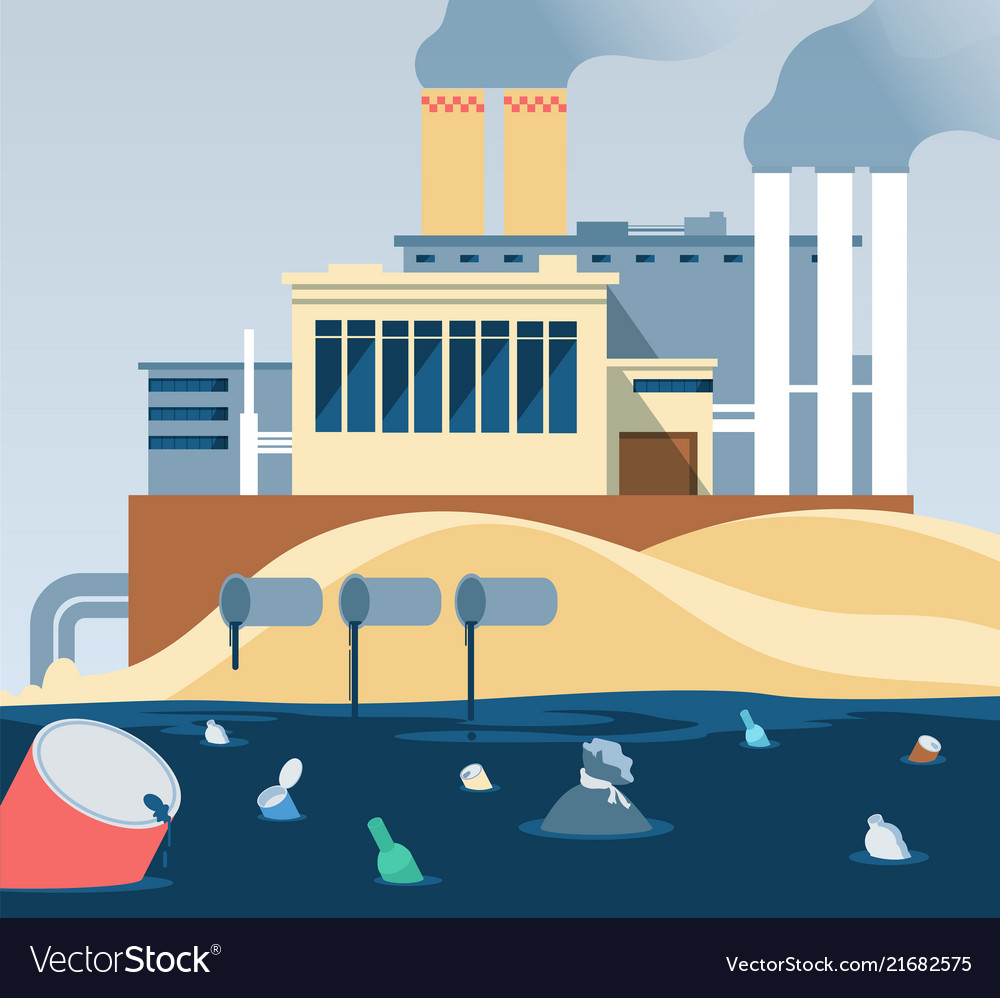
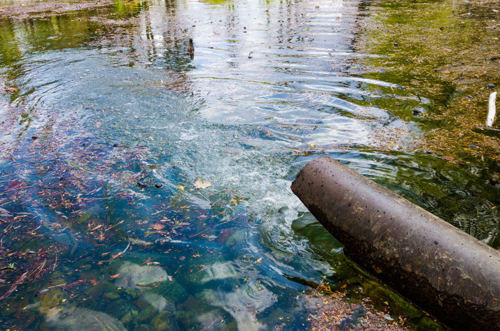
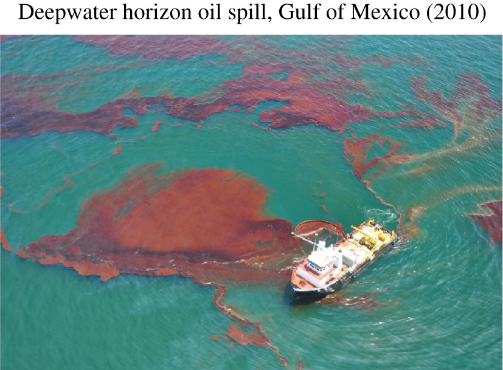
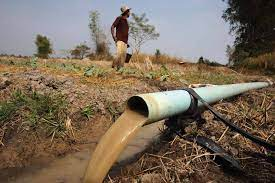
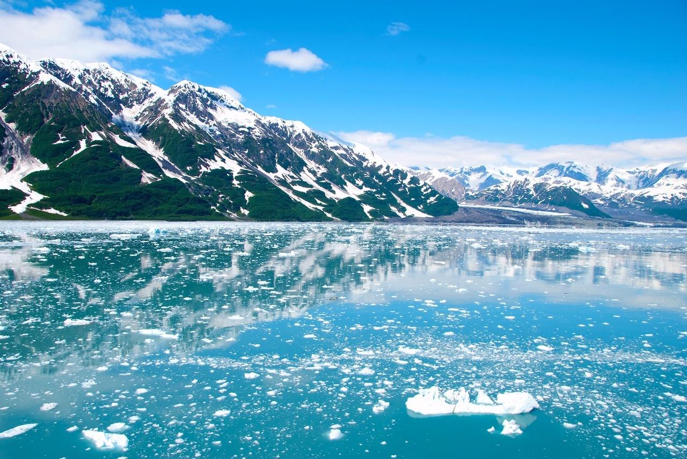
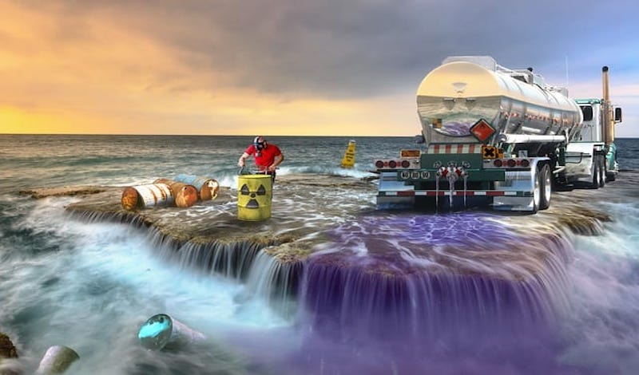

CAUSES OF WATER POLLUTION
Water is one of the most important elements on Earth when it comes to sustaining life. Unfortunately, it is also extremely susceptible to pollution. This is largely because water is a universal solvent that can dissolve many substances. While this is a wonderful quality that we take advantage of for everyday tasks such as cooking, cleaning and taking medication, it is also the exact quality that causes water to become polluted so easily.
There are many causes of water pollution. Below, we will focus on seven of the major ways that water can become polluted.
1. Industrial Waste 
Industries and industrial sites across the world are a major contributor to water pollution. Many industrial sites produce waste in the form of toxic chemicals and pollutants, and though regulated, some still do not have proper waste management systems in place. In those rare cases, industrial waste is dumped into nearby freshwater systems. When industrial waste is not treated properly (or worse, not treated at all), it can very easily pollute the freshwater systems that it comes into contact with. Industrial waste from agricultural sites, mines and manufacturing plants can make its way into rivers, streams and other bodies of water that lead directly to the sea. The toxic chemicals in the waste produced by these industries not only have the potential to make water unsafe for human consumption, they can also cause the temperature in freshwater systems to change, making them dangerous for many water dwelling organisms.
2. Marine Dumping 
The process of marine dumping is exactly what it sounds like, dumping garbage into the waters of the ocean. It might seem crazy, but household garbage is still collected and dumped into oceans by many countries across the world. Most of these items can take anywhere from two to 200 years to decompose completely.
3. Sewage and Wastewater 
Harmful chemicals, bacteria and pathogens can be found in sewage and wastewater even when it's been treated. Sewage and wastewater from each household is released into the sea with fresh water. The pathogens and bacteria found in that wastewater breed disease, and therefore are a cause of health-related issues in humans and animals alike.
4. Oil Leaks and Spills 
The age-old phrase “like water and oil” is used when describing two things that do not mix easily or at all. Just as the saying states, water and oil do not mix, and oil does not dissolve in water. Large oil spills and oil leaks, while often accidental, are a major cause of water pollution. Leaks and spills often are caused by oil drilling operations in the ocean or ships that transport oil. wildlife.
5. Agriculture 
In order to protect their crops from bacteria and insects, farmers often use chemicals and pesticides. When these substances seep into the groundwater, they can harm animals, plants and humans. Additionally, when it rains, the chemicals mix with rainwater, which then flows into rivers and streams that filter into the ocean, causing further water pollution.
6. Global Warming 
Rising temperatures due to global warming are a major concern in terms of water pollution. Global warming causes water temperatures to rise, which can kill water-dwelling animals. When large die-offs occur, it further pollutes the water supply, exacerbating the issue. There are many everyday ways you can help reduce global warming, which will in turn help lower water pollution. These methods include recycling, carpooling and using CFL bulbs in your home.
7. Radioactive Waste 
Radioactive waste from facilities that create nuclear energy can be extremely hazardous to the environment and must be disposed of properly. This is because uranium, the element used in the creation of nuclear energy, is a highly toxic chemical. Unfortunately, accidents still occur at these facilities, and toxic waste is released into the environment. The coal and gas industries are, in many ways, no better. This is one of the major impetuses behind the development of alternative, clean sources of energy, including solar and wind.